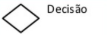

Lógica de Programação - Aprenda o Básico
O que é Lógica de Programação?
Lógica de programação é a técnica de organizar e encadear pensamentos de forma sequencial para atingir um objetivo. Ela é essencial para quem deseja trabalhar com desenvolvimento de sistemas e programas, pois permite definir uma sequência lógica de ações.
O que são algoritmos?
Um algoritmo é um conjunto finito de instruções ordenadas que descrevem passo a passo como resolver um problema ou realizar uma tarefa.
Exemplo:

Regras essenciais de um algoritmo
- Um algoritmo sempre deve terminar apos um numero finito de passos
- Um algoritmo sempre deve terminar apos uma quantidade finita de tempo
- Um algoritmo sempre deve ser executado com uma quantidade finita de recursos
- Frases curtas e simples, tendo apenas um verbo por frase
- Ser objetivo, claro e direto
- Não pode ter duplo-sentido
- Deve ser compreensível, mesmo para quem não é da área.
Exemplo de algoritmo - Rotina
Aqui vai a minha rotina como exemplo de algoritmo
- Acordar no horário certo
- Se arrumar para sair
- Sair de casa
- Entrar no carro
- Esperar chegar na escola
- Sair do carro
- Entrar na escola
- Estudar
- Sair da escola
- Ir até o ponto de ônibus
- Esperar o ônibus chegar
- Entrar no ônibus
- Esperar chegar no ponto
- Sair do ônibus
- Caminhar até a casa
- Entrar em casa
Etapas de um Algoritmo
|
Dados fornecidos pelo usuário (Ex: notas, nomes, preços). |
|
Manipulação e cálculos com os dados (Ex: média das notas) |
 |
Resultado final exibido ao usuário. |
Exemplos em imagens
Formas de representar Algoritmos
Existem varias formas de representar algoritmos, dentre as formas de representação mais famosas podemos citar:
1. Descrição narrativa
Explica os passos em linguagem natural
Exemplo:
- Ler o primeiro número
- Ler o segundo número
- Somar os dois números
- Exibir o resultado
2. Fluxograma
Representação gráfica dos passos com símbolos e setas. Cada bloco tem uma função (início/fim, entrada, processamento, decisão, exibição).
Blocos mais usados:
|
Início/Fim, deve ser usado sempre no fim e no começo do seu fluxograma. |
|
Entrada manual de dados deve ser usada sempre que o usuário precisar inserir algum dado. |
|
Processamento deve ser usado toda vez que o computador precisar fazer algum processamento. |
|  |
Decisão deve ser usada toda vez que o computador tiver que fazer alguma decisão. |
|
Setas de fluxo devem ser usadas para ligar os blocos no fluxograma. |
|
Exibição deve ser usada toda vez que o computador for exibir algo na tela para o usuário. |
Aqui vai uma imagens mais completa:
3. Pseudocódigo (ou Portugol)
Exemplo de Pseudocódigo no Visualg
Var
Nome: Caracter
Idade: Inteiro
Altura: Real
Inicio
Escreval ("Digite o seu nome")
Leia (Nome)
Escreval ("Digite sua idade")
Leia (Idade)
Escreval ("Digite sua altura")
Leia (Altura)
Escreval ("Seu nome é: ", Nome)
Escreval ("Sua idade é: ", Idade)
Escreval ("Sua altura é: ", Altura)
Fim
Constantes, Variáveis e Tipos de Dados
Constantes: Valores que não mudam (Ex: π = 3,14)
Variáveis: Espaços de memória para armazenar dados que podem mudar.
Tipos de dados: Caractere (letras e símbolos)
Inteiro (números sem vírgula)
Real (números com vírgula)
Exemplos de nomes válidos para variáveis:
| Válido |
Errado |
|
| NomeSobrenome |
Nome sobrenome |
| Nome_Aluno |
Nome$Aluno |
| Nota1 |
1Nota |
Operadores
Aritméticos
| Operação |
Símbolo |
| Soma |
+ |
| Subtração |
- |
| Multiplicação |
* |
| Divisão |
/ |
| Exponenciação |
** |
| Atribuição |
<- ou = no Visualg |
| Comentários |
// |
Hierarquia das operações
- Parênteses: ()
- Exponenciação: **
- Multiplicação ou Divisão: * ou / (O que parecer primeiro na operação)
- Soma ou Subtração: + ou - (O que aparecer primeiro na operação)
Operadores Relacionais
| Descrição |
Simbolo |
|
| Igual a |
= |
| Diferente de |
<> |
| Maior que |
> |
| Menor que |
< |
| Maior ou igual a |
>= |
| Menor ou igual a |
<= |
Operadores Lógicos
| Portugues |
Ingles |
|
| E |
And |
| Ou |
Or |
| Não |
Not |
Exemplos do uso dos Operadores Lógicos
E (AND) – as duas condições devem ser verdadeiras:
Se for sábado E fizer sol → vou para a piscina.
OU (OR) – apenas uma das condições precisa ser verdadeira:
Se for sábado OU fizer sol → vou para a piscina.
NÃO (NOT) – inverte o valor lógico:
Baixar o Visualg
Site de fluxograma